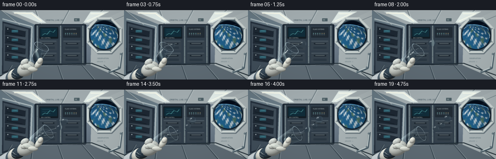
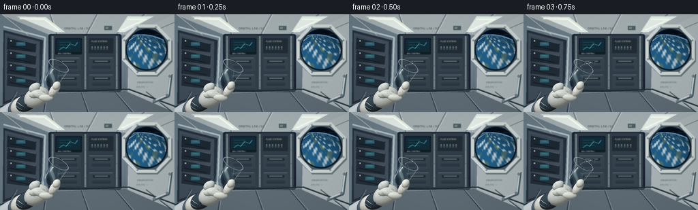

CODING AGENTS AS PIXEL WORLD MODELS
traex/GPT-6.1-Sol · phygen_001
点击播放 · 原生 RGB 像素
逐轮保存的候选
回放视频、检查图与代码变化。
每份候选均可单独播放。实际图片检查记录在下方工具轨迹中。
候选 01播放与检查图
点击播放 · 原生 RGB 像素


展开代码变化
--- 上一保存版本
+++ 本次保存版本
@@ -0,0 +1,452 @@
+"""Text-only procedural microgravity water scene.
+All geometry, lighting, fluid surfaces, and textures are constructed locally.
+"""
+from pathlib import Path
+import json, math, shutil, subprocess
+import numpy as np
+from PIL import Image, ImageDraw, ImageFont, ImageFilter
+from artifact_io import save
+
+ROOT = Path(__file__).resolve().parent
+SPEC = json.loads((ROOT / 'task_spec.json').read_text())
+W,H = SPEC['width'], SPEC['height']
+S = 3
+SW,SH = W*S,H*S
+Y,X = np.mgrid[0:SH,0:SW].astype(np.float32)
+X=(X+.5)/S; Y=(Y+.5)/S
+rng=np.random.default_rng(71)
+
+def pts(p): return [(round(x*S),round(y*S)) for x,y in p]
+def poly(d,p,c): d.polygon(pts(p),fill=c)
+def line(d,p,c,w=1): d.line(pts(p),fill=c,width=max(1,round(w*S)),joint='curve')
+def box(d,b,c,r=0,outline=None,w=1):
+ b=tuple(round(v*S) for v in b)
+ if r: d.rounded_rectangle(b,radius=round(r*S),fill=c,outline=outline,width=max(1,round(w*S)))
+ else: d.rectangle(b,fill=c,outline=outline,width=max(1,round(w*S)))
+def ellipse(d,b,c,outline=None,w=1): d.ellipse(tuple(round(v*S) for v in b),fill=c,outline=outline,width=max(1,round(w*S)))
+def text(d,p,t,size,c):
+ fp='/usr/share/fonts/truetype/dejavu/DejaVuSans.ttf'
+ try: f=ImageFont.truetype(fp,round(size*S))
+ except OSError: f=ImageFont.load_default()
+ d.text((round(p[0]*S),round(p[1]*S)),t,font=f,fill=c)
+
+def background():
+ # Soft, cool ambient lighting on a ribbed orbital laboratory interior.
+ glow=np.exp(-((X-114)**2/130**2+(Y-24)**2/115**2))
+ a=np.stack([74+57*glow,88+58*glow,101+59*glow],axis=-1)
+ a+=(rng.normal(0,.6,(SH,SW,1)))
+ im=Image.fromarray(np.uint8(np.clip(a,0,255)))
+ d=ImageDraw.Draw(im)
+ # Architectural perspective: ceiling, broad rack bays, lower return-air panels.
+ poly(d,[(0,0),(256,0),(189,30),(72,30)],(163,173,176))
+ poly(d,[(0,0),(72,30),(67,120),(0,144)],(105,123,134))
+ poly(d,[(0,144),(67,116),(190,111),(256,144)],(94,107,116))
+ poly(d,[(256,0),(189,30),(187,114),(256,144)],(169,179,181))
+ for x in [-70,1,73,142,212,284]:
+ line(d,[(x,0),(100+(x-100)*.62,30)],(103,117,124),1.4)
+ line(d,[(x+2,0),(102+(x-100)*.62,30)],(201,211,211),.5)
+ poly(d,[(24,3),(67,4),(95,26),(81,26)],(224,235,232))
+ poly(d,[(187,3),(225,3),(183,26),(172,26)],(227,237,233))
+ line(d,[(29,6),(65,7),(86,23)],(255,255,239),2.2)
+ line(d,[(187,7),(214,7),(179,23)],(250,254,241),2)
+ # Left experiment cabinet, with equipment drawers and cables.
+ poly(d,[(5,23),(63,38),(60,113),(4,133)],(37,49,62))
+ poly(d,[(7,27),(58,40),(57,110),(7,128)],(65,79,91))
+ for k in range(4):
+ yy=40+k*18
+ poly(d,[(11,yy-7),(53,yy+3),(52,yy+16),(10,yy+11)],(29+k*2,40+k*2,51+k*2))
+ line(d,[(12,yy-6),(52,yy+3)],(135,153,159),.65)
+ line(d,[(14,yy+6),(46,yy+13)],(11,20,29),1)
+ ellipse(d,(15,yy-2,17,yy),(185,197,199))
+ box(d,(24,yy+1,37,yy+6),(49,98,113),.8)
+ line(d,[(27,yy+2),(34,yy+3)],(102,182,190),.5)
+ line(d,[(5,18),(66,34),(63,118)],(180,193,196),2.2)
+ # Main dark instrument rack, contrasting the clear water.
+ box(d,(71,29,178,114),(24,35,47),3)
+ box(d,(74,31,175,111),(49,62,74),2)
+ for xx in [76,124,170]:
+ box(d,(xx,32,xx+2,110),(133,148,151),.6)
+ for yy in [36,55,75,96,107]: ellipse(d,(xx+.5,yy,xx+1.5,yy+1),(42,51,59))
+ box(d,(81,35,120,59),(20,29,36),1.3)
+ box(d,(83,37,118,55),(17,44,57),.6)
+ for yy in [41,45,49]:
+ line(d,[(87,yy),(104,yy)],(53,119,132),.35)
+ line(d,[(87,52),(93,48),(97,50),(103,43),(110,46),(114,41)],(104,192,189),.6)
+ text(d,(85,56),'ENV CONTROL',2.7,(183,200,202))
+ box(d,(130,35,166,57),(34,44,53),1)
+ text(d,(134,38),'FLUID SYSTEMS',3,(184,197,199))
+ for j in range(6):
+ box(d,(134+j*4.4,47,136+j*4.4,52),(65,81,91),.35)
+ ellipse(d,(134.6+j*4.4,47.7,135.6+j*4.4,48.7),(111,195,173) if j<4 else (199,157,74))
+ for yy in [63,88]:
+ for xx in [81,130]:
+ box(d,(xx,yy,xx+37,yy+20),(54,66,76),1)
+ line(d,[(xx+1,yy+1),(xx+35,yy+1)],(111,127,135),.5)
+ box(d,(xx+6,yy+5,xx+31,yy+8),(28,38,47),.8)
+ line(d,[(xx+9,yy+6),(xx+28,yy+6)],(121,134,136),1)
+ for j in range(6): line(d,[(xx+5,yy+13+j*.75),(xx+32,yy+13+j*.75)],(29,42,53),.35)
+ # Small, believable technical labels, not an on-screen caption.
+ text(d,(94,18),'ORBITAL LAB / 02',4.2,(55,75,85))
+ box(d,(153,17,164,23),(75,93,100),.8)
+ text(d,(155,18),'02',3.5,(220,230,225))
+ # Lower panels and floor rail receding behind the hand.
+ for x in [6,64,129,194,253]:
+ xx=85+(x-85)*.77
+ line(d,[(x,144),(xx,114)],(47,61,71),1.4)
+ line(d,[(x+2,144),(xx+1,114)],(151,165,169),.5)
+ line(d,[(0,136),(68,114),(189,110),(256,135)],(33,46,54),2)
+ line(d,[(0,138),(68,116),(189,112),(256,137)],(198,207,205),.8)
+ # Right orbital viewing port: recessed octagonal metal, gasket, bolts.
+ cx,cy=215,52
+ outline=[(cx+39*math.cos(math.pi/8+k*math.pi/4),cy+40*math.sin(math.pi/8+k*math.pi/4)) for k in range(8)]
+ poly(d,[(x+1.5,y+2.5) for x,y in outline],(102,116,123))
+ poly(d,outline,(203,212,210))
+ inner=[(cx+34*math.cos(math.pi/8+k*math.pi/4),cy+35*math.sin(math.pi/8+k*math.pi/4)) for k in range(8)]
+ poly(d,inner,(73,90,100))
+ ellipse(d,(cx-30.7,cy-30.7,cx+30.7,cy+30.7),(12,24,36))
+ ellipse(d,(cx-29,cy-29,cx+29,cy+29),(4,10,21))
+ arr=np.asarray(im).astype(np.float32)
+ win=(X-cx)**2+(Y-cy)**2 < 28.9**2
+ # Earth fills the bottom of the porthole; curved atmospheric limb and cloud bands.
+ ex,ey,er=207.,102.,72.
+ dx=(X-ex)/er; dy=(Y-ey)/er
+ r2=dx*dx+dy*dy
+ earth=win&(r2<1)
+ zz=np.sqrt(np.clip(1-r2,0,1))
+ lon=np.arctan2(dx,zz+.001); lat=np.arcsin(np.clip(-dy,-1,1))
+ continents=(np.sin(lon*9+lat*8)+.52*np.sin(lon*21-lat*12+1)+.27*np.cos(lon*39+lat*23))
+ land=np.clip((continents-.7)*1.8,0,1)
+ ocean=np.stack([16+21*zz,54+54*zz,91+62*zz],-1)
+ terrain=np.stack([63+23*zz,94+34*zz,92+22*zz],-1)
+ col=ocean*(1-land[...,None])+terrain*land[...,None]
+ cloudfield=np.sin(22*lat+7*np.sin(lon*4)+3*np.sin(lat*5+lon*6))+.65*np.cos(lon*34-lat*18)+.33*np.sin(lon*71+lat*42)
+ clouds=np.clip((cloudfield-.38)*.85,0,.95)
+ col=col*(1-clouds[...,None])+np.array([209,222,227])*clouds[...,None]
+ illum=np.clip(.6+.5*(-dx*.4-dy*.6+zz*.4),.28,1)
+ col*=illum[...,None]
+ atm=np.exp(-np.abs(r2-1)*105)
+ col=col*(1-atm[...,None]*.45)+np.array([101,189,252])*atm[...,None]*.65
+ arr[earth]=col[earth]
+ outside=win&(~earth)
+ arr[outside]=np.array([3,10,22])+np.clip((Y[outside]-15)[:,None]/30,0,1)*np.array([3,6,10])
+ arr[win&(np.abs(r2-1)<.013)]=np.array([113,204,251])
+ # Sparse stars only in space, restrained window reflection.
+ for _ in range(21):
+ sx=rng.uniform(cx-27,cx+27); sy=rng.uniform(cy-27,cy+20)
+ if (sx-cx)**2+(sy-cy)**2<27**2 and (sx-ex)**2+(sy-ey)**2>er**2:
+ m=(X-sx)**2+(Y-sy)**2<rng.uniform(.10,.30)**2
+ arr[m]=[184,205,226]
+ reflection=win & (np.abs((X-cx)*.34+(Y-cy)+17)<1.1)
+ arr[reflection]=arr[reflection]*.87+np.array([115,149,166])*.13
+ im=Image.fromarray(np.uint8(np.clip(arr,0,255))); d=ImageDraw.Draw(im)
+ for k in range(8):
+ a=math.pi/8+k*math.pi/4
+ sx=cx+35.5*math.cos(a);sy=cy+36*math.sin(a)
+ ellipse(d,(sx-1.1,sy-1.1,sx+1.1,sy+1.1),(103,117,123))
+ ellipse(d,(sx-.55,sy-.7,sx+.55,sy+.45),(217,225,220))
+ line(d,[(sx-.3,sy),(sx+.3,sy)],(56,72,78),.35)
+ # Right handrail and service junctions.
+ line(d,[(251,88),(247,120),(224,129)],(66,85,96),4.3)
+ line(d,[(250,88),(246,119),(224,128)],(200,211,211),2.1)
+ for xx,yy in [(249,91),(245,119),(226,127)]: ellipse(d,(xx-2,yy-2,xx+2,yy+2),(108,125,133))
+ text(d,(201,98),'OBSERVATION',3.3,(82,103,111))
+ text(d,(200,105),'AIRLOCK >',3,(103,121,127))
+ # Defocus preserves the subject/background separation.
+ return np.asarray(im.filter(ImageFilter.GaussianBlur(.42*S))).astype(np.float32)
+
+BG=background()
+
+def sample(a,sx,sy):
+ sx=np.clip(sx*S-.5,0,SW-1.001); sy=np.clip(sy*S-.5,0,SH-1.001)
+ ix=sx.astype(np.int32); iy=sy.astype(np.int32)
+ u=(sx-ix)[...,None];v=(sy-iy)[...,None]
+ return (a[iy,ix]*(1-u)+a[iy,ix+1]*u)*(1-v)+(a[iy+1,ix]*(1-u)+a[iy+1,ix+1]*u)*v
+
+# Convex textile glove forms. The shapes are lit, textured ellipsoid surfaces,
+# not outlines; small seam curves are added after the surfaces.
+def ellipsoid(a,c,rx,ry,angle=0,color=(211,217,215),depth=.8):
+ ca,sa=math.cos(angle),math.sin(angle)
+ dx=X-c[0];dy=Y-c[1]
+ u=(dx*ca+dy*sa)/rx;v=(-dx*sa+dy*ca)/ry
+ q=u*u+v*v;mask=q<1
+ z=np.sqrt(np.maximum(0,1-q))
+ nx=(u*ca/rx-v*sa/ry)*min(rx,ry)*depth
+ ny=(u*sa/rx+v*ca/ry)*min(rx,ry)*depth
+ nz=z
+ norm=np.sqrt(nx*nx+ny*ny+nz*nz)+1e-6
+ light=np.maximum(0,(-.40*nx-.65*ny+.69*nz)/norm)
+ shade=.46+.53*light+.08*z
+ texture=(np.sin((X*3.7+Y*.6)*S)*np.sin(Y*4.9*S))*.010
+ shade+=texture
+ col=np.array(color)[None,None,:]*shade[...,None]
+ col+=np.maximum(0,light-.8)[...,None]*np.array([16,16,13])
+ alpha=np.clip((1-q)*S*min(rx,ry)*.55,0,1)
+ a[mask]=a[mask]*(1-alpha[mask,None])+col[mask]*alpha[mask,None]
+ return a
+
+def glove_back(a,t):
+ ellipsoid(a,(14,147),33,15,-.57,(198,207,211))
+ ellipsoid(a,(29,137),19,14,-.57,(92,111,125))
+ ellipsoid(a,(32,135),17.5,13.7,-.57,(229,231,221))
+ ellipsoid(a,(39,130),17,12.3,-.57,(55,72,85))
+ ellipsoid(a,(54,122),20,14.7,-.50,(218,223,216))
+ ellipsoid(a,(51,108),9.5,6.6,-.55,(218,224,219))
+ ellipsoid(a,(54,117),12,6.1,-.25,(219,224,217))
+ return a
+
+def cup_pose(t):
+ # The wrist turns gently; there is no gravity-driven fall of the fluid.
+ ease=np.clip(t/3.9,0,1); ease=ease*ease*(3-2*ease)
+ angle=math.radians(61-32*ease)
+ az=.41
+ A=np.array([math.cos(angle)*math.sqrt(1-az*az),-math.sin(angle)*math.sqrt(1-az*az),az])
+ B=np.array([67+.6*math.sin(t*.5),110-.4*math.sin(t*.7),8.])
+ return B,A,B+A*43
+
+
+def cup_surfaces(t):
+ B,A,M=cup_pose(t); L=43.; rb=11.7; k=(16.4-rb)/L
+ dx=X-B[0];dy=Y-B[1]
+ # z is relative to cup base. Quadratic ray/conical-shell intersections.
+ s0=dx*A[0]+dy*A[1]
+ aa=1-A[2]**2-(k*A[2])**2
+ bb=-2*s0*A[2]-2*(rb+k*s0)*k*A[2]
+ cc=dx*dx+dy*dy-s0*s0-(rb+k*s0)**2
+ disc=bb*bb-4*aa*cc
+ root=np.sqrt(np.maximum(disc,0))
+ zf=(-bb+root)/(2*aa);zb=(-bb-root)/(2*aa)
+ sf=s0+A[2]*zf; sb=s0+A[2]*zb
+ mf=(disc>0)&(sf>0)&(sf<L);mb=(disc>0)&(sb>0)&(sb<L)
+ def normals(z,s):
+ rad=rb+k*s
+ nx=dx-s*A[0];ny=dy-s*A[1];nz=z-s*A[2]
+ nx=nx/(rad+1e-6)-k*A[0];ny=ny/(rad+1e-6)-k*A[1];nz=nz/(rad+1e-6)-k*A[2]
+ n=np.sqrt(nx*nx+ny*ny+nz*nz)+1e-6
+ return nx/n,ny/n,nz/n
+ nf=normals(zf,sf);nb=normals(zb,sb)
+ # Mouth annulus, a thick rolled glass lip; the opening is really empty.
+ zr=(L-s0)/A[2]
+ rr=np.sqrt(np.maximum(0,dx*dx+dy*dy+zr*zr-L*L))
+ ring=(rr>15.0)&(rr<16.8)
+ rim_alpha=np.clip(np.minimum(rr-15.0,16.8-rr)*S,0,1)
+ # Flat thick base visible through glass, no opaque bottom.
+ z0=-s0/A[2]
+ rr0=np.sqrt(np.maximum(0,dx*dx+dy*dy+z0*z0))
+ base=(rr0<rb)&(rr0>rb-1.7)
+ return (mf,nf,sf,mb,nb,sb,ring,rim_alpha,base,rr)
+
+
+def glass_back(a,c):
+ mf,nf,sf,mask,n,sb,ring,ra,base,rr=c
+ nx,ny,nz=n
+ fres=.04+.35*(1-np.abs(nz))**4
+ refr=sample(a,X+nx*.7,Y+ny*.7)
+ col=refr*(1-fres[...,None]*.45)+np.array([158,180,188])*fres[...,None]*.45
+ a[mask]=col[mask]
+ return a
+
+
+def glass_front(a,c):
+ mask,(nx,ny,nz),sf,mb,nb,sb,ring,ra,base,rr=c
+ f=.018+.50*(1-np.abs(nz))**5
+ refl=np.stack([105+93*np.maximum(0,-ny),128+85*np.maximum(0,-ny),142+81*np.maximum(0,-ny)],-1)
+ refr=sample(a,X-nx*.65,Y-ny*.65)
+ col=refr*(1-f[...,None]) + refl*f[...,None]
+ col=col*.99+np.array([1,2,2])
+ # Rectangular laboratory-light reflections on the glass walls.
+ streak=np.exp(-((nx+.72)/.055)**2)*np.clip(.4+(-ny)*.6,0,1)
+ streak+=.65*np.exp(-((nx-.68)/.045)**2)
+ streak*=np.clip(sf/5,0,1)*np.clip((43-sf)/4,0,1)
+ col+=streak[...,None]*np.array([65,69,65])
+ a[mask]=col[mask]
+ # Polished lip, light side brighter than the distant underside.
+ lip=np.stack([130+79*np.clip((16.8-rr)/1.8,0,1),158+70*np.clip((16.8-rr)/1.8,0,1),172+63*np.clip((16.8-rr)/1.8,0,1)],-1)
+ lip*= (.68+.32*np.clip((100-Y)/25,0,1))[...,None]
+ alpha=ra*.67
+ a[ring]=a[ring]*(1-alpha[ring,None])+lip[ring]*alpha[ring,None]
+ a[base]=a[base]*.70+np.array([152,179,190])*.30
+ return a
+
+
+def fluid_nodes(t):
+ B,A,M=cup_pose(t)
+ progress=np.clip((t-.3)/4.4,0,1)
+ # Curved, surface-tension-dominated water retained in the glass.
+ internal=[]
+ for s,r in [(13,9.1),(23,9.0),(32,7.8)]:
+ p=B+A*s
+ shrink=(1-.62*progress)
+ internal.append((p[0],p[1],r*shrink))
+ # Water is coaxed out as short ligaments which pinch into free-floating blobs.
+ emissions=[(.28,7.9,0), (1.78,6.1,1), (3.13,6.8,2)]
+ nodes=internal[:]
+ direction=np.array([.95,-.312])
+ for e,r,index in emissions:
+ age=t-e
+ if age<=0: continue
+ detach=1.10
+ if age<detach:
+ distance=3+24*age/detach
+ head=M[:2]+direction*distance
+ head[1]+=math.sin(age*3+index)*1.0
+ grow=np.clip(age/detach,0,1)
+ hr=r*(.28+.72*math.sin(grow*math.pi/2))
+ else:
+ _,_,md=cup_pose(e+detach)
+ drift=age-detach
+ head=md[:2]+direction*27+np.array([11.4-index*1.0,-3.2+index*.7])*drift
+ head[1]+=math.sin(detach*3+index)*1.0
+ hr=r*(1+.028*math.sin(drift*5+index))
+ # A little non-spherical relaxation just after release.
+ nodes.append((head[0],head[1],hr))
+ if age<1.30:
+ start=M[:2]-direction*6
+ dist=np.linalg.norm(head-start)
+ count=max(4,int(dist/2.4))
+ fade=np.clip((1.30-age)/.30,0,1)
+ for j in range(count):
+ u=j/count
+ p=start*(1-u)+head*u
+ p[1]-=2.3*math.sin(math.pi*u)*math.sin(age*2+index+.3)
+ neck=(1.35+.5*math.sin(math.pi*u))
+ # Central pinching occurs before the bridge disappears.
+ neck*=1-(1-fade)*math.sin(math.pi*u)**4
+ neck*=min(1,age/.17)
+ if neck>.23: nodes.append((p[0],p[1],neck))
+ # Small satellites are produced at pinch-off, never sprayed chaotically.
+ if age>1.16:
+ _,_,md=cup_pose(e+1.10)
+ da=age-1.16
+ for j,(off,vel,rad) in enumerate([
+ ((18,-6),(8.4,-6.0),1.50),
+ ((19,4),(9.5,1.6),2.20),
+ ]):
+ p=md[:2]+direction*17+np.array(off)*.30+np.array(vel)*da
+ nodes.append((p[0],p[1],rad*(.88+.12*np.clip(da/.25,0,1))))
+ return nodes
+
+
+def environment(nx,ny,nz):
+ # Reflection of two broad overhead luminaires, dark racks and Earth-blue side light.
+ rx=2*nx*nz; ry=2*ny*nz; rz=2*nz*nz-1
+ lum1=np.exp(-((rx+.45)/.22)**6-((ry+.62)/.11)**4)
+ lum2=np.exp(-((rx-.62)/.10)**4-((ry+.35)/.42)**6)
+ top=np.clip(-ry,0,1)
+ env=np.stack([44+78*top,62+94*top,78+105*top],-1)
+ env+=(lum1*.9+lum2*.6)[...,None]*np.array([167,167,145])
+ earth=np.exp(-((rx-.82)/.35)**2-((ry+.05)/.50)**2)
+ env+=earth[...,None]*np.array([15,48,73])
+ return env
+
+
+def water(a,t):
+ nodes=fluid_nodes(t)
+ # Sum-of-inverse-quartic metaballs; solve the front surface along each camera ray.
+ # This constructs coherent rounded volumes with smooth liquid necks.
+ xmin=max(0,int((min(x-r*1.7 for x,y,r in nodes)-1)*S))
+ xmax=min(SW,int((max(x+r*1.7 for x,y,r in nodes)+1)*S)+1)
+ ymin=max(0,int((min(y-r*1.7 for x,y,r in nodes)-1)*S))
+ ymax=min(SH,int((max(y+r*1.7 for x,y,r in nodes)+1)*S)+1)
+ xx=X[ymin:ymax,xmin:xmax]; yy=Y[ymin:ymax,xmin:xmax]
+ ds=[]; r4=[]
+ for cx,cy,r in nodes:
+ ds.append((xx-cx)**2+(yy-cy)**2+1e-6)
+ r4.append(r**4)
+ field=np.zeros_like(xx)
+ for dd,rr in zip(ds,r4):field+=rr/(dd*dd)
+ mask=field>=1.
+ low=np.zeros_like(xx);high=np.full_like(xx,max(r for x,y,r in nodes)*2.0)
+ for _ in range(14):
+ z=(low+high)*.5;z2=z*z
+ f=np.zeros_like(xx)
+ for dd,rr in zip(ds,r4):f+=rr/(dd+z2)**2
+ inside=f>=1
+ low=np.where(inside,z,low);high=np.where(inside,high,z)
+ z=(low+high)*.5
+ gx=np.zeros_like(xx);gy=np.zeros_like(xx);gz=np.zeros_like(xx)
+ for (cx,cy,r),dd,rr in zip(nodes,ds,r4):
+ wt=rr/(dd+z*z)**3
+ gx+=wt*(xx-cx);gy+=wt*(yy-cy);gz+=wt*z
+ norm=np.sqrt(gx*gx+gy*gy+gz*gz)+1e-10
+ nx=gx/norm;ny=gy/norm;nz=gz/norm
+ # Refraction through a curved water volume. This shows the cabin through it,
+ # with lens distortion, Fresnel edges, absorption and sharp softbox glints.
+ refr=sample(a,xx-nx*z*.62,yy-ny*z*.62)
+ absorption=np.exp(-z[...,None]*np.array([.009,.004,.0015]))
+ refr=refr*absorption + np.array([23,63,85])*(1-absorption)*.42
+ fres=.020+(1-.020)*(1-nz)**5
+ env=environment(nx,ny,nz)
+ color=refr*(1-fres[...,None])+env*fres[...,None]
+ # Upper-left area light reflection, secondary narrow reflected strip.
+ half=np.array([-.34,-.48,.808]);half/=np.linalg.norm(half)
+ nd=np.clip(nx*half[0]+ny*half[1]+nz*half[2],0,1)
+ broad=nd**25*.19
+ spec=nd**165*.84
+ strip=np.exp(-((nx+.63)/.043)**2-((ny+.32)/.21)**6)*.65
+ second=np.exp(-((nx-.70)/.033)**2-((ny+.11)/.34)**6)*.25
+ gleam=np.clip(broad+spec+strip+second,0,.97)
+ color=color*(1-gleam[...,None])+np.array([241,251,249])*gleam[...,None]
+ # Thin teal/dark boundary with a light far-edge caustic, not an opaque outline.
+ edge=(1-nz)**6
+ color=color*(1-edge[...,None]*.13)
+ caustic=np.exp(-((nz-.19)/.07)**2)*np.clip(ny*.5+nx*.2,0,1)*.26
+ color=color*(1-caustic[...,None])+np.array([183,225,235])*caustic[...,None]
+ alpha=np.clip((field-1)*2.5,0,1)
+ target=a[ymin:ymax,xmin:xmax]
+ target[mask]=target[mask]*(1-alpha[mask,None])+color[mask]*alpha[mask,None]
+ return a
+
+
+def glove_front(a,t):
+ B,A,M=cup_pose(t)
+ # Thumb and curled fingertips grip the bottom, leaving the liquid unobstructed.
+ angle=math.atan2(A[1],A[0])
+ ellipsoid(a,(B[0]-8,B[1]+9),11.7,5.4,.17,(218,225,217))
+ ellipsoid(a,(B[0]+.5,B[1]+13),10.7,5.3,.05,(224,228,219))
+ ellipsoid(a,(B[0]+13,B[1]+1),12,6.4,-.92,(229,231,220))
+ ellipsoid(a,(B[0]+15.9,B[1]-5),6.9,5.5,-.92,(231,232,222))
+ im=Image.fromarray(np.uint8(np.clip(a,0,255)));d=ImageDraw.Draw(im)
+ # Fine stitched seams and restrained wrist joint texture.
+ for p in [ [(43,124),(48,123),(52,125)],[(47,105),(48,108),(51,110)],
+ [(55,116),(59,116),(62,117)],[(60,126),(65,127),(70,127)],
+ [(77,109),(79,111),(81,111)],[(73,114),(75,117),(76,119)]]:
+ line(d,p,(137,152,154),.38)
+ line(d,[(22,133),(26,137),(32,140)],(154,169,171),.65)
+ line(d,[(25,129),(30,133),(36,136)],(240,242,232),.65)
+ for j in range(6):
+ x=31+j*1.3;y=135-j*.70
+ line(d,[(x,y),(x+2,y+3)],(28,44,58),.55)
+ return np.asarray(im).astype(np.float32)
+
+
+def render(t):
+ a=BG.copy()
+ a=glove_back(a,t)
+ c=cup_surfaces(t)
+ a=glass_back(a,c)
+ a=water(a,t)
+ a=glass_front(a,c)
+ a=glove_front(a,t)
+ # Filmic response: gentle highlight compression, slight lens vignette.
+ vignette=1-.095*((X-133)/167)**2-.065*((Y-68)/108)**2
+ a*=vignette[...,None]
+ a=np.clip(a,0,255)
+ im=Image.fromarray(a.astype(np.uint8)).resize((W,H),Image.Resampling.LANCZOS)
+ return np.asarray(im,dtype=np.uint8)
+
+
+def main():
+ frames=[]
+ for i in range(SPEC['frames']):
+ frames.append(render(i/SPEC['fps']))
+ print(f'rendered {i+1}/{SPEC["frames"]}',flush=True)
+ frames=np.stack(frames)
+ save(frames,ROOT)
+ # A conventional RGB video companion, in addition to the exact artifact tensor.
+ if shutil.which('ffmpeg'):
+ subprocess.run(['ffmpeg','-y','-loglevel','error','-framerate',str(SPEC['fps']),
+ '-i',str(ROOT/'frames'/'%02d.png'),'-c:v','libx264','-crf','17',
+ '-pix_fmt','yuv420p','-movflags','+faststart',str(ROOT/'video.mp4')],check=True)
+ print('Saved',frames.shape,frames.dtype)
+
+if __name__=='__main__': main()
候选 02播放与检查图
点击播放 · 原生 RGB 像素

展开代码变化
--- 上一保存版本
+++ 本次保存版本
@@ -443,8 +443,15 @@
frames=np.stack(frames)
save(frames,ROOT)
# A conventional RGB video companion, in addition to the exact artifact tensor.
- if shutil.which('ffmpeg'):
- subprocess.run(['ffmpeg','-y','-loglevel','error','-framerate',str(SPEC['fps']),
+ ffmpeg = shutil.which('ffmpeg')
+ if not ffmpeg:
+ try:
+ import imageio_ffmpeg
+ ffmpeg = imageio_ffmpeg.get_ffmpeg_exe()
+ except ImportError:
+ pass
+ if ffmpeg:
+ subprocess.run([ffmpeg,'-y','-loglevel','error','-framerate',str(SPEC['fps']),
'-i',str(ROOT/'frames'/'%02d.png'),'-c:v','libx264','-crf','17',
'-pix_fmt','yuv420p','-movflags','+faststart',str(ROOT/'video.mp4')],check=True)
print('Saved',frames.shape,frames.dtype)
可观测工具轨迹
实际执行的命令与返回图片。
命令 1exit 0
/bin/bash -lc "ls -la && cat prompt.txt && printf '\\n---RULES---\\n' && cat GENERATION_RULES.md && printf '\\n---SPEC---\\n' && cat task_spec.json"
命令 2exit 0
/bin/bash -lc "cat artifact_io.py && printf '\\n---PYTHON---\\n' && python - <<'PY' import importlib.util for n in ['numpy','PIL','scipy']: print(n, bool(importlib.util.find_spec(n))) PY"
命令 3exit 0
/bin/bash -lc "cat > generate.py <<'PY'
\"\"\"Text-only procedural microgravity water scene.
All geometry, lighting, fluid surfaces, and textures are constructed locally.
\"\"\"
from pathlib import Path
import json, math, shutil, subprocess
import numpy as np
from PIL import Image, ImageDraw, ImageFont, ImageFilter
from artifact_io import save
ROOT = Path(__file__).resolve().parent
SPEC = json.loads((ROOT / 'task_spec.json').read_text())
W,H = SPEC['width'], SPEC['height']
S = 3
SW,SH = W*S,H*S
Y,X = np.mgrid[0:SH,0:SW].astype(np.float32)
X=(X+.5)/S; Y=(Y+.5)/S
rng=np.random.default_rng(71)
def pts(p): return [(round(x*S),round(y*S)) for x,y in p]
def poly(d,p,c): d.polygon(pts(p),fill=c)
def line(d,p,c,w=1): d.line(pts(p),fill=c,width=max(1,round(w*S)),joint='curve')
def box(d,b,c,r=0,outline=None,w=1):
b=tuple(round(v*S) for v in b)
if r: d.rounded_rectangle(b,radius=round(r*S),fill=c,outline=outline,width=max(1,round(w*S)))
else: d.rectangle(b,fill=c,outline=outline,width=max(1,round(w*S)))
def ellipse(d,b,c,outline=None,w=1): d.ellipse(tuple(round(v*S) for v in b),fill=c,outline=outline,width=max(1,round(w*S)))
def text(d,p,t,size,c):
fp='/usr/share/fonts/truetype/dejavu/DejaVuSans.ttf'
try: f=ImageFont.truetype(fp,round(size*S))
except OSError: f=ImageFont.load_default()
d.text((round(p[0]*S),round(p[1]*S)),t,font=f,fill=c)
def background():
# Soft, cool ambient lighting on a ribbed orbital laboratory interior.
glow=np.exp(-((X-114)**2/130**2+(Y-24)**2/115**2))
a=np.stack([74+57*glow,88+58*glow,101+59*glow],axis=-1)
a+=(rng.normal(0,.6,(SH,SW,1)))
im=Image.fromarray(np.uint8(np.clip(a,0,255)))
d=ImageDraw.Draw(im)
# Architectural perspective: ceiling, broad rack bays, lower return-air panels.
poly(d,[(0,0),(256,0),(189,30),(72,30)],(163,173,176))
poly(d,[(0,0),(72,30),(67,120),(0,144)],(105,123,134))
poly(d,[(0,144),(67,116),(190,111),(256,144)],(94,107,116))
poly(d,[(256,0),(189,30),(187,114),(256,144)],(169,179,181))
for x in [-70,1,73,142,212,284]:
line(d,[(x,0),(100+(x-100)*.62,30)],(103,117,124),1.4)
line(d,[(x+2,0),(102+(x-100)*.62,30)],(201,211,211),.5)
poly(d,[(24,3),(67,4),(95,26),(81,26)],(224,235,232))
poly(d,[(187,3),(225,3),(183,26),(172,26)],(227,237,233))
line(d,[(29,6),(65,7),(86,23)],(255,255,239),2.2)
line(d,[(187,7),(214,7),(179,23)],(250,254,241),2)
# Left experiment cabinet, with equipment drawers and cables.
poly(d,[(5,23),(63,38),(60,113),(4,133)],(37,49,62))
poly(d,[(7,27),(58,40),(57,110),(7,128)],(65,79,91))
for k in range(4):
yy=40+k*18
poly(d,[(11,yy-7),(53,yy+3),(52,yy+16),(10,yy+11)],(29+k*2,40+k*2,51+k*2))
line(d,[(12,yy-6),(52,yy+3)],(135,153,159),.65)
line(d,[(14,yy+6),(46,yy+13)],(11,20,29),1)
ellipse(d,(15,yy-2,17,yy),(185,197,199))
box(d,(24,yy+1,37,yy+6),(49,98,113),.8)
line(d,[(27,yy+2),(34,yy+3)],(102,182,190),.5)
line(d,[(5,18),(66,34),(63,118)],(180,193,196),2.2)
# Main dark instrument rack, contrasting the clear water.
box(d,(71,29,178,114),(24,35,47),3)
box(d,(74,31,175,111),(49,62,74),2)
for xx in [76,124,170]:
box(d,(xx,32,xx+2,110),(133,148,151),.6)
for yy in [36,55,75,96,107]: ellipse(d,(xx+.5,yy,xx+1.5,yy+1),(42,51,59))
box(d,(81,35,120,59),(20,29,36),1.3)
box(d,(83,37,118,55),(17,44,57),.6)
for yy in [41,45,49]:
line(d,[(87,yy),(104,yy)],(53,119,132),.35)
line(d,[(87,52),(93,48),(97,50),(103,43),(110,46),(114,41)],(104,192,189),.6)
text(d,(85,56),'ENV CONTROL',2.7,(183,200,202))
box(d,(130,35,166,57),(34,44,53),1)
text(d,(134,38),'FLUID SYSTEMS',3,(184,197,199))
for j in range(6):
box(d,(134+j*4.4,47,136+j*4.4,52),(65,81,91),.35)
ellipse(d,(134.6+j*4.4,47.7,135.6+j*4.4,48.7),(111,195,173) if j<4 else (199,157,74))
for yy in [63,88]:
for xx in [81,130]:
box(d,(xx,yy,xx+37,yy+20),(54,66,76),1)
line(d,[(xx+1,yy+1),(xx+35,yy+1)],(111,127,135),.5)
box(d,(xx+6,yy+5,xx+31,yy+8),(28,38,47),.8)
line(d,[(xx+9,yy+6),(xx+28,yy+6)],(121,134,136),1)
for j in range(6): line(d,[(xx+5,yy+13+j*.75),(xx+32,yy+13+j*.75)],(29,42,53),.35)
# Small, believable technical labels, not an on-screen caption.
text(d,(94,18),'ORBITAL LAB / 02',4.2,(55,75,85))
box(d,(153,17,164,23),(75,93,100),.8)
text(d,(155,18),'02',3.5,(220,230,225))
# Lower panels and floor rail receding behind the hand.
for x in [6,64,129,194,253]:
xx=85+(x-85)*.77
line(d,[(x,144),(xx,114)],(47,61,71),1.4)
line(d,[(x+2,144),(xx+1,114)],(151,165,169),.5)
line(d,[(0,136),(68,114),(189,110),(256,135)],(33,46,54),2)
line(d,[(0,138),(68,116),(189,112),(256,137)],(198,207,205),.8)
# Right orbital viewing port: recessed octagonal metal, gasket, bolts.
cx,cy=215,52
outline=[(cx+39*math.cos(math.pi/8+k*math.pi/4),cy+40*math.sin(math.pi/8+k*math.pi/4)) for k in range(8)]
poly(d,[(x+1.5,y+2.5) for x,y in outline],(102,116,123))
poly(d,outline,(203,212,210))
inner=[(cx+34*math.cos(math.pi/8+k*math.pi/4),cy+35*math.sin(math.pi/8+k*math.pi/4)) for k in range(8)]
poly(d,inner,(73,90,100))
ellipse(d,(cx-30.7,cy-30.7,cx+30.7,cy+30.7),(12,24,36))
ellipse(d,(cx-29,cy-29,cx+29,cy+29),(4,10,21))
arr=np.asarray(im).astype(np.float32)
win=(X-cx)**2+(Y-cy)**2 < 28.9**2
# Earth fills the bottom of the porthole; curved atmospheric limb and cloud bands.
ex,ey,er=207.,102.,72.
dx=(X-ex)/er; dy=(Y-ey)/er
r2=dx*dx+dy*dy
earth=win&(r2<1)
zz=np.sqrt(np.clip(1-r2,0,1))
lon=np.arctan2(dx,zz+.001); lat=np.arcsin(np.clip(-dy,-1,1))
continents=(np.sin(lon*9+lat*8)+.52*np.sin(lon*21-lat*12+1)+.27*np.cos(lon*39+lat*23))
land=np.clip((continents-.7)*1.8,0,1)
ocean=np.stack([16+21*zz,54+54*zz,91+62*zz],-1)
terrain=np.stack([63+23*zz,94+34*zz,92+22*zz],-1)
col=ocean*(1-land[...,None])+terrain*land[...,None]
cloudfield=np.sin(22*lat+7*np.sin(lon*4)+3*np.sin(lat*5+lon*6))+.65*np.cos(lon*34-lat*18)+.33*np.sin(lon*71+lat*42)
clouds=np.clip((cloudfield-.38)*.85,0,.95)
col=col*(1-clouds[...,None])+np.array([209,222,227])*clouds[...,None]
illum=np.clip(.6+.5*(-dx*.4-dy*.6+zz*.4),.28,1)
col*=illum[...,None]
atm=np.exp(-np.abs(r2-1)*105)
col=col*(1-atm[...,None]*.45)+np.array([101,189,252])*atm[...,None]*.65
arr[earth]=col[earth]
outside=win&(~earth)
arr[outside]=np.array([3,10,22])+np.clip((Y[outside]-15)[:,None]/30,0,1)*np.array([3,6,10])
arr[win&(np.abs(r2-1)<.013)]=np.array([113,204,251])
# Sparse stars only in space, restrained window reflection.
for _ in range(21):
sx=rng.uniform(cx-27,cx+27); sy=rng.uniform(cy-27,cy+20)
if (sx-cx)**2+(sy-cy)**2<27**2 and (sx-ex)**2+(sy-ey)**2>er**2:
m=(X-sx)**2+(Y-sy)**2<rng.uniform(.10,.30)**2
arr[m]=[184,205,226]
reflection=win & (np.abs((X-cx)*.34+(Y-cy)+17)<1.1)
arr[reflection]=arr[reflection]*.87+np.array([115,149,166])*.13
im=Image.fromarray(np.uint8(np.clip(arr,0,255))); d=ImageDraw.Draw(im)
for k in range(8):
a=math.pi/8+k*math.pi/4
sx=cx+35.5*math.cos(a);sy=cy+36*math.sin(a)
ellipse(d,(sx-1.1,sy-1.1,sx+1.1,sy+1.1),(103,117,123))
ellipse(d,(sx-.55,sy-.7,sx+.55,sy+.45),(217,225,220))
line(d,[(sx-.3,sy),(sx+.3,sy)],(56,72,78),.35)
# Right handrail and service junctions.
line(d,[(251,88),(247,120),(224,129)],(66,85,96),4.3)
line(d,[(250,88),(246,119),(224,128)],(200,211,211),2.1)
for xx,yy in [(249,91),(245,119),(226,127)]: ellipse(d,(xx-2,yy-2,xx+2,yy+2),(108,125,133))
text(d,(201,98),'OBSERVATION',3.3,(82,103,111))
text(d,(200,105),'AIRLOCK >',3,(103,121,127))
# Defocus preserves the subject/background separation.
return np.asarray(im.filter(ImageFilter.GaussianBlur(.42*S))).astype(np.float32)
BG=background()
def sample(a,sx,sy):
sx=np.clip(sx*S-.5,0,SW-1.001); sy=np.clip(sy*S-.5,0,SH-1.001)
ix=sx.astype(np.int32); iy=sy.astype(np.int32)
u=(sx-ix)[...,None];v=(sy-iy)[...,None]
return (a[iy,ix]*(1-u)+a[iy,ix+1]*u)*(1-v)+(a[iy+1,ix]*(1-u)+a[iy+1,ix+1]*u)*v
# Convex textile glove forms. The shapes are lit, textured ellipsoid surfaces,
# not outlines; small seam curves are added after the surfaces.
def ellipsoid(a,c,rx,ry,angle=0,color=(211,217,215),depth=.8):
ca,sa=math.cos(angle),math.sin(angle)
dx=X-c[0];dy=Y-c[1]
u=(dx*ca+dy*sa)/rx;v=(-dx*sa+dy*ca)/ry
q=u*u+v*v;mask=q<1
z=np.sqrt(np.maximum(0,1-q))
nx=(u*ca/rx-v*sa/ry)*min(rx,ry)*depth
ny=(u*sa/rx+v*ca/ry)*min(rx,ry)*depth
nz=z
norm=np.sqrt(nx*nx+ny*ny+nz*nz)+1e-6
light=np.maximum(0,(-.40*nx-.65*ny+.69*nz)/norm)
shade=.46+.53*light+.08*z
texture=(np.sin((X*3.7+Y*.6)*S)*np.sin(Y*4.9*S))*.010
shade+=texture
col=np.array(color)[None,None,:]*shade[...,None]
col+=np.maximum(0,light-.8)[...,None]*np.array([16,16,13])
alpha=np.clip((1-q)*S*min(rx,ry)*.55,0,1)
a[mask]=a[mask]*(1-alpha[mask,None])+col[mask]*alpha[mask,None]
return a
def glove_back(a,t):
ellipsoid(a,(14,147),33,15,-.57,(198,207,211))
ellipsoid(a,(29,137),19,14,-.57,(92,111,125))
ellipsoid(a,(32,135),17.5,13.7,-.57,(229,231,221))
ellipsoid(a,(39,130),17,12.3,-.57,(55,72,85))
ellipsoid(a,(54,122),20,14.7,-.50,(218,223,216))
ellipsoid(a,(51,108),9.5,6.6,-.55,(218,224,219))
ellipsoid(a,(54,117),12,6.1,-.25,(219,224,217))
return a
def cup_pose(t):
# The wrist turns gently; there is no gravity-driven fall of the fluid.
ease=np.clip(t/3.9,0,1); ease=ease*ease*(3-2*ease)
angle=math.radians(61-32*ease)
az=.41
A=np.array([math.cos(angle)*math.sqrt(1-az*az),-math.sin(angle)*math.sqrt(1-az*az),az])
B=np.array([67+.6*math.sin(t*.5),110-.4*math.sin(t*.7),8.])
return B,A,B+A*43
def cup_surfaces(t):
B,A,M=cup_pose(t); L=43.; rb=11.7; k=(16.4-rb)/L
dx=X-B[0];dy=Y-B[1]
# z is relative to cup base. Quadratic ray/conical-shell intersections.
s0=dx*A[0]+dy*A[1]
aa=1-A[2]**2-(k*A[2])**2
bb=-2*s0*A[2]-2*(rb+k*s0)*k*A[2]
cc=dx*dx+dy*dy-s0*s0-(rb+k*s0)**2
disc=bb*bb-4*aa*cc
root=np.sqrt(np.maximum(disc,0))
zf=(-bb+root)/(2*aa);zb=(-bb-root)/(2*aa)
sf=s0+A[2]*zf; sb=s0+A[2]*zb
mf=(disc>0)&(sf>0)&(sf<L);mb=(disc>0)&(sb>0)&(sb<L)
def normals(z,s):
rad=rb+k*s
nx=dx-s*A[0];ny=dy-s*A[1];nz=z-s*A[2]
nx=nx/(rad+1e-6)-k*A[0];ny=ny/(rad+1e-6)-k*A[1];nz=nz/(rad+1e-6)-k*A[2]
n=np.sqrt(nx*nx+ny*ny+nz*nz)+1e-6
return nx/n,ny/n,nz/n
nf=normals(zf,sf);nb=normals(zb,sb)
# Mouth annulus, a thick rolled glass lip; the opening is really empty.
zr=(L-s0)/A[2]
rr=np.sqrt(np.maximum(0,dx*dx+dy*dy+zr*zr-L*L))
ring=(rr>15.0)&(rr<16.8)
rim_alpha=np.clip(np.minimum(rr-15.0,16.8-rr)*S,0,1)
# Flat thick base visible through glass, no opaque bottom.
z0=-s0/A[2]
rr0=np.sqrt(np.maximum(0,dx*dx+dy*dy+z0*z0))
base=(rr0<rb)&(rr0>rb-1.7)
return (mf,nf,sf,mb,nb,sb,ring,rim_alpha,base,rr)
def glass_back(a,c):
mf,nf,sf,mask,n,sb,ring,ra,base,rr=c
nx,ny,nz=n
fres=.04+.35*(1-np.abs(nz))**4
refr=sample(a,X+nx*.7,Y+ny*.7)
col=refr*(1-fres[...,None]*.45)+np.array([158,180,188])*fres[...,None]*.45
a[mask]=col[mask]
return a
def glass_front(a,c):
mask,(nx,ny,nz),sf,mb,nb,sb,ring,ra,base,rr=c
f=.018+.50*(1-np.abs(nz))**5
refl=np.stack([105+93*np.maximum(0,-ny),128+85*np.maximum(0,-ny),142+81*np.maximum(0,-ny)],-1)
refr=sample(a,X-nx*.65,Y-ny*.65)
col=refr*(1-f[...,None]) + refl*f[...,None]
col=col*.99+np.array([1,2,2])
# Rectangular laboratory-light reflections on the glass walls.
streak=np.exp(-((nx+.72)/.055)**2)*np.clip(.4+(-ny)*.6,0,1)
streak+=.65*np.exp(-((nx-.68)/.045)**2)
streak*=np.clip(sf/5,0,1)*np.clip((43-sf)/4,0,1)
col+=streak[...,None]*np.array([65,69,65])
a[mask]=col[mask]
# Polished lip, light side brighter than the distant underside.
lip=np.stack([130+79*np.clip((16.8-rr)/1.8,0,1),158+70*np.clip((16.8-rr)/1.8,0,1),172+63*np.clip((16.8-rr)/1.8,0,1)],-1)
lip*= (.68+.32*np.clip((100-Y)/25,0,1))[...,None]
alpha=ra*.67
a[ring]=a[ring]*(1-alpha[ring,None])+lip[ring]*alpha[ring,None]
a[base]=a[base]*.70+np.array([152,179,190])*.30
return a
def fluid_nodes(t):
B,A,M=cup_pose(t)
progress=np.clip((t-.3)/4.4,0,1)
# Curved, surface-tension-dominated water retained in the glass.
internal=[]
for s,r in [(13,9.1),(23,9.0),(32,7.8)]:
p=B+A*s
shrink=(1-.62*progress)
internal.append((p[0],p[1],r*shrink))
# Water is coaxed out as short ligaments which pinch into free-floating blobs.
emissions=[(.28,7.9,0), (1.78,6.1,1), (3.13,6.8,2)]
nodes=internal[:]
direction=np.array([.95,-.312])
for e,r,index in emissions:
age=t-e
if age<=0: continue
detach=1.10
if age<detach:
distance=3+24*age/detach
head=M[:2]+direction*distance
head[1]+=math.sin(age*3+index)*1.0
grow=np.clip(age/detach,0,1)
hr=r*(.28+.72*math.sin(grow*math.pi/2))
else:
_,_,md=cup_pose(e+detach)
drift=age-detach
head=md[:2]+direction*27+np.array([11.4-index*1.0,-3.2+index*.7])*drift
head[1]+=math.sin(detach*3+index)*1.0
hr=r*(1+.028*math.sin(drift*5+index))
# A little non-spherical relaxation just after release.
nodes.append((head[0],head[1],hr))
if age<1.30:
start=M[:2]-direction*6
dist=np.linalg.norm(head-start)
count=max(4,int(dist/2.4))
fade=np.clip((1.30-age)/.30,0,1)
for j in range(count):
u=j/count
p=start*(1-u)+head*u
p[1]-=2.3*math.sin(math.pi*u)*math.sin(age*2+index+.3)
neck=(1.35+.5*math.sin(math.pi*u))
# Central pinching occurs before the bridge disappears.
neck*=1-(1-fade)*math.sin(math.pi*u)**4
neck*=min(1,age/.17)
if neck>.23: nodes.append((p[0],p[1],neck))
# Small satellites are produced at pinch-off, never sprayed chaotically.
if age>1.16:
_,_,md=cup_pose(e+1.10)
da=age-1.16
for j,(off,vel,rad) in enumerate([
((18,-6),(8.4,-6.0),1.50),
((19,4),(9.5,1.6),2.20),
]):
p=md[:2]+direction*17+np.array(off)*.30+np.array(vel)*da
nodes.append((p[0],p[1],rad*(.88+.12*np.clip(da/.25,0,1))))
return nodes
def environment(nx,ny,nz):
# Reflection of two broad overhead luminaires, dark racks and Earth-blue side light.
rx=2*nx*nz; ry=2*ny*nz; rz=2*nz*nz-1
lum1=np.exp(-((rx+.45)/.22)**6-((ry+.62)/.11)**4)
lum2=np.exp(-((rx-.62)/.10)**4-((ry+.35)/.42)**6)
top=np.clip(-ry,0,1)
env=np.stack([44+78*top,62+94*top,78+105*top],-1)
env+=(lum1*.9+lum2*.6)[...,None]*np.array([167,167,145])
earth=np.exp(-((rx-.82)/.35)**2-((ry+.05)/.50)**2)
env+=earth[...,None]*np.array([15,48,73])
return env
def water(a,t):
nodes=fluid_nodes(t)
# Sum-of-inverse-quartic metaballs; solve the front surface along each camera ray.
# This constructs coherent rounded volumes with smooth liquid necks.
xmin=max(0,int((min(x-r*1.7 for x,y,r in nodes)-1)*S))
xmax=min(SW,int((max(x+r*1.7 for x,y,r in nodes)+1)*S)+1)
ymin=max(0,int((min(y-r*1.7 for x,y,r in nodes)-1)*S))
ymax=min(SH,int((max(y+r*1.7 for x,y,r in nodes)+1)*S)+1)
xx=X[ymin:ymax,xmin:xmax]; yy=Y[ymin:ymax,xmin:xmax]
ds=[]; r4=[]
for cx,cy,r in nodes:
ds.append((xx-cx)**2+(yy-cy)**2+1e-6)
r4.append(r**4)
field=np.zeros_like(xx)
for dd,rr in zip(ds,r4):field+=rr/(dd*dd)
mask=field>=1.
low=np.zeros_like(xx);high=np.full_like(xx,max(r for x,y,r in nodes)*2.0)
for _ in range(14):
z=(low+high)*.5;z2=z*z
f=np.zeros_like(xx)
for dd,rr in zip(ds,r4):f+=rr/(dd+z2)**2
inside=f>=1
low=np.where(inside,z,low);high=np.where(inside,high,z)
z=(low+high)*.5
gx=np.zeros_like(xx);gy=np.zeros_like(xx);gz=np.zeros_like(xx)
for (cx,cy,r),dd,rr in zip(nodes,ds,r4):
wt=rr/(dd+z*z)**3
gx+=wt*(xx-cx);gy+=wt*(yy-cy);gz+=wt*z
norm=np.sqrt(gx*gx+gy*gy+gz*gz)+1e-10
nx=gx/norm;ny=gy/norm;nz=gz/norm
# Refraction through a curved water volume. This shows the cabin through it,
# with lens distortion, Fresnel edges, absorption and sharp softbox glints.
refr=sample(a,xx-nx*z*.62,yy-ny*z*.62)
absorption=np.exp(-z[...,None]*np.array([.009,.004,.0015]))
refr=refr*absorption + np.array([23,63,85])*(1-absorption)*.42
fres=.020+(1-.020)*(1-nz)**5
env=environment(nx,ny,nz)
color=refr*(1-fres[...,None])+env*fres[...,None]
# Upper-left area light reflection, secondary narrow reflected strip.
half=np.array([-.34,-.48,.808]);half/=np.linalg.norm(half)
nd=np.clip(nx*half[0]+ny*half[1]+nz*half[2],0,1)
broad=nd**25*.19
spec=nd**165*.84
strip=np.exp(-((nx+.63)/.043)**2-((ny+.32)/.21)**6)*.65
second=np.exp(-((nx-.70)/.033)**2-((ny+.11)/.34)**6)*.25
gleam=np.clip(broad+spec+strip+second,0,.97)
color=color*(1-gleam[...,None])+np.array([241,251,249])*gleam[...,None]
# Thin teal/dark boundary with a light far-edge caustic, not an opaque outline.
edge=(1-nz)**6
color=color*(1-edge[...,None]*.13)
caustic=np.exp(-((nz-.19)/.07)**2)*np.clip(ny*.5+nx*.2,0,1)*.26
color=color*(1-caustic[...,None])+np.array([183,225,235])*caustic[...,None]
alpha=np.clip((field-1)*2.5,0,1)
target=a[ymin:ymax,xmin:xmax]
target[mask]=target[mask]*(1-alpha[mask,None])+color[mask]*alpha[mask,None]
return a
def glove_front(a,t):
B,A,M=cup_pose(t)
# Thumb and curled fingertips grip the bottom, leaving the liquid unobstructed.
angle=math.atan2(A[1],A[0])
ellipsoid(a,(B[0]-8,B[1]+9),11.7,5.4,.17,(218,225,217))
ellipsoid(a,(B[0]+.5,B[1]+13),10.7,5.3,.05,(224,228,219))
ellipsoid(a,(B[0]+13,B[1]+1),12,6.4,-.92,(229,231,220))
ellipsoid(a,(B[0]+15.9,B[1]-5),6.9,5.5,-.92,(231,232,222))
im=Image.fromarray(np.uint8(np.clip(a,0,255)));d=ImageDraw.Draw(im)
# Fine stitched seams and restrained wrist joint texture.
for p in [ [(43,124),(48,123),(52,125)],[(47,105),(48,108),(51,110)],
[(55,116),(59,116),(62,117)],[(60,126),(65,127),(70,127)],
[(77,109),(79,111),(81,111)],[(73,114),(75,117),(76,119)]]:
line(d,p,(137,152,154),.38)
line(d,[(22,133),(26,137),(32,140)],(154,169,171),.65)
line(d,[(25,129),(30,133),(36,136)],(240,242,232),.65)
for j in range(6):
x=31+j*1.3;y=135-j*.70
line(d,[(x,y),(x+2,y+3)],(28,44,58),.55)
return np.asarray(im).astype(np.float32)
def render(t):
a=BG.copy()
a=glove_back(a,t)
c=cup_surfaces(t)
a=glass_back(a,c)
a=water(a,t)
a=glass_front(a,c)
a=glove_front(a,t)
# Filmic response: gentle highlight compression, slight lens vignette.
vignette=1-.095*((X-133)/167)**2-.065*((Y-68)/108)**2
a*=vignette[...,None]
a=np.clip(a,0,255)
im=Image.fromarray(a.astype(np.uint8)).resize((W,H),Image.Resampling.LANCZOS)
return np.asarray(im,dtype=np.uint8)
def main():
frames=[]
for i in range(SPEC['frames']):
frames.append(render(i/SPEC['fps']))
print(f'rendered {i+1}/{SPEC[\"frames\"]}',flush=True)
frames=np.stack(frames)
save(frames,ROOT)
# A conventional RGB video companion, in addition to the exact artifact tensor.
if shutil.which('ffmpeg'):
subprocess.run(['ffmpeg','-y','-loglevel','error','-framerate',str(SPEC['fps']),
'-i',str(ROOT/'frames'/'%02d.png'),'-c:v','libx264','-crf','17',
'-pix_fmt','yuv420p','-movflags','+faststart',str(ROOT/'video.mp4')],check=True)
print('Saved',frames.shape,frames.dtype)
if __name__=='__main__': main()
PY
python generate.py"命令 4exit 127
/bin/bash -lc "python - <<'PY'
from pathlib import Path
import numpy as np
from PIL import Image
import json
p=Path('.')
spec=json.loads((p/'task_spec.json').read_text())
a=np.load('pixels.npz')['pixels']
assert a.shape==(144,256,20)
assert len(list((p/'frames').glob('*.png')))==20
frames=np.stack([np.asarray(Image.open(p/'frames'/f'{i:02d}.png')) for i in range(20)])
assert frames.shape==(20,144,256,3) and frames.dtype==np.uint8
packed=(frames[:,:,:,0].astype(np.uint32)<<16)|(frames[:,:,:,1].astype(np.uint32)<<8)|frames[:,:,:,2]
assert np.array_equal(a,packed.transpose(1,2,0))
assert all(np.any(frames[i]"'!=frames[i-1]) for i in range(1,20))
print('"'Validated: 20 RGB frames, 256Ã144, uint8; exact NPZ/PNG correspondence.')
print('Frame-to-frame mean absolute pixel difference:',np.round(np.abs(np.diff(frames.astype(float),axis=0)).mean(axis=(1,2,3)),3))
for name in ['generate.py','pixels.npz','index.html','inspection.png','transition_check.png','video.mp4']:
print(name,(p/name).stat().st_size,'bytes')
PY
ffprobe -v error -select_streams v:0 -show_entries stream=width,height,r_frame_rate,nb_frames,duration -of json video.mp4"命令 5exit 0
/bin/bash -lc "python - <<'PY' import importlib.util for m in ['imageio_ffmpeg','imageio','cv2','av']: print(m,bool(importlib.util.find_spec(m))) PY"
命令 6exit 0
/bin/bash -lc "python generate.py && python - <<'PY'
from pathlib import Path
import av,numpy as np
p=Path('.')
a=np.load('pixels.npz')['pixels']
assert a.shape==(144,256,20)
with av.open('video.mp4') as c:
s=c.streams.video[0]
assert (s.width,s.height)==(256,144)
assert float(s.average_rate)==4.0
decoded=list(c.decode(video=0))
assert len(decoded)==20
print('Validated MP4: 256x144, 4 fps, 20 frames, 5 seconds.')
for name in ['generate.py','pixels.npz','index.html','inspection.png','transition_check.png','video.mp4']:
assert (p/name).is_file()
print(name,(p/name).stat().st_size,'bytes')
PY"保存候选 2 份；完成命令 6 次；可验证图片返回 0 张。原始 API 响应与完整日志保留在本地。